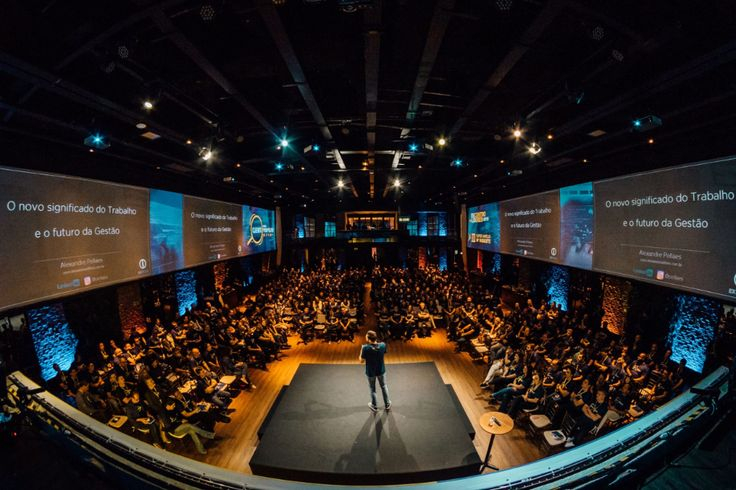
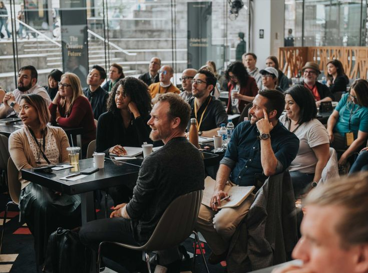

A Conference is a meeting of several people to discuss a particular topic. It is often confused with a convention, or symposium. People meet to confer about a theme. All the people who attend have a common interest. which is typically much bigger and consists of delegates who represent various different groups.
Conferences can vary in terms of their size depending on their purpose,idea or event For example, in business conferences the itinerary of events may be made up of speeches from influential individuals within the business motivational speakers, and business updates from departments within the organisation.

TYPES OF CONFERENCE
A business conference is held for people working in the same company or industry. They come together to discuss new trends and opportunities pertaining to the business